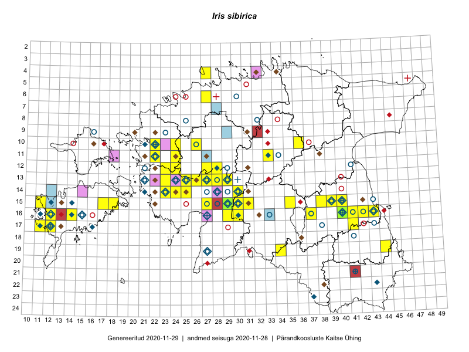

Iris sibirica
Uuendatud: 2016-12-08
Kaardile koondatud taksonid: Iris sibirica L.

Kaart põhineb 81 kirjel, neist vaatlusi 80 ja eksemplare 1. Taksonit on leitud 28 ruudust.
| Ruut | Vaatleja(d) | Vaatlusaeg | Kirje tüüp | Viide andmebaasikirjele |
|---|---|---|---|---|
| 12-28 | Tiit Hallikma, Toomas Kukk, Indrek Tammekänd | 2015-06-09 | ruut/ala | vaata PlutoFis |
| 16-40 | Thea Kull | 2015-07-07 | ruut/ala | vaata PlutoFis |
| 12-28 | Tiit Hallikma, Indrek Tammekänd, Toomas Kukk | 2015-06-09 | punkt | vaata PlutoFis |
| 15-29 | Peedu Saar, Liina Oja | 2015-06-11 | punkt | vaata PlutoFis |
| 16-29 | Peedu Saar, Liina Oja | 2015-06-11 | punkt | vaata PlutoFis |
| 13-26 | Ott Luuk | 2015-06-28 | ruut/ala | vaata PlutoFis |
| 13-26 | Ott Luuk | 2015-06-28 | punkt | vaata PlutoFis |
| 15-29 | Peedu Saar, Liina Oja | 2015-06-11 | ruut/ala | vaata PlutoFis |
| 16-29 | Peedu Saar, Liina Oja | 2015-06-11 | ruut/ala | vaata PlutoFis |
| 15-30 | Tiit Hallikma, Toomas Kukk | 2015-06-10 | ruut/ala | vaata PlutoFis |
| 15-30 | Tiit Hallikma, Toomas Kukk | 2015-06-10 | punkt | vaata PlutoFis |
| 15-30 | Tiit Hallikma, Toomas Kukk | 2015-06-10 | punkt | vaata PlutoFis |
| 16-40 | Thea Kull | 2015-07-15 | punkt | vaata PlutoFis |
| 16-42 | Peedu Saar | 2015-06-22 | punkt | vaata PlutoFis |
| 11-33 | Ott Luuk, Hannes Pehlak | 2015-06-08 | ruut/ala | vaata PlutoFis |
| 10-22 | Toomas Kukk, Thea Kull | 2014-08-21 | ruut/ala | vaata PlutoFis |
| 11-22 | Toomas Kukk, Thea Kull | 2014-08-21 | punkt | vaata PlutoFis |
| 11-22 | Toomas Kukk, Thea Kull | 2014-08-21 | ruut/ala | vaata PlutoFis |
| 10-22 | Toomas Kukk, Thea Kull | 2014-08-21 | punkt | vaata PlutoFis |
| 10-22 | Toomas Kukk, Thea Kull | 2014-08-21 | punkt | vaata PlutoFis |
| 10-22 | Toomas Kukk, Thea Kull | 2014-08-21 | punkt | vaata PlutoFis |
| 10-22 | Toomas Kukk, Thea Kull | 2014-08-21 | punkt | vaata PlutoFis |
| 10-22 | Toomas Kukk, Thea Kull | 2014-08-21 | punkt | vaata PlutoFis |
| 10-22 | Toomas Kukk, Thea Kull | 2014-08-21 | punkt | vaata PlutoFis |
| 10-22 | Toomas Kukk, Thea Kull | 2014-08-21 | punkt | vaata PlutoFis |
| 10-22 | Toomas Kukk, Thea Kull | 2014-08-21 | punkt | vaata PlutoFis |
| 10-22 | Toomas Kukk, Thea Kull | 2014-08-21 | punkt | vaata PlutoFis |
| 10-22 | Toomas Kukk, Thea Kull | 2014-08-21 | punkt | vaata PlutoFis |
| 10-22 | Toomas Kukk, Thea Kull | 2014-08-21 | punkt | vaata PlutoFis |
| 11-22 | Toomas Kukk, Thea Kull | 2014-08-21 | punkt | vaata PlutoFis |
| 16-42 | Peedu Saar | 2015-06-22 | ruut/ala | vaata PlutoFis |
| 13-25 | Indrek Tammekänd, Katrin Aavik | 2015-06-15 | punkt | vaata PlutoFis |
| 15-30 | Indrek Tammekänd, Raivo Endrekson | 2015-06-16 | punkt | vaata PlutoFis |
| 14-30 | Indrek Tammekänd, Raivo Endrekson | 2015-06-16 | punkt | vaata PlutoFis |
| 15-40 | Thea Kull | 2015-06-15 | ruut/ala | vaata PlutoFis |
| 15-40 | Thea Kull | 2015-06-21 | punkt | vaata PlutoFis |
| 13-23 | Ott Luuk, Peedu Saar | 2014-08-29 | ruut/ala | vaata PlutoFis |
| 13-23 | Peedu Saar, Ott Luuk | 2014-08-29 | punkt | vaata PlutoFis |
| 17-12 | Mari Reitalu | 2015-07-01 | ruut/ala | vaata PlutoFis |
| 17-12 | Mari Reitalu | 2014-09-02 | ruut/ala | vaata PlutoFis |
| 17-12 | Mari Reitalu | 2014-09-02 | punkt | vaata PlutoFis |
| 17-12 | Mari Reitalu | 2015-06-19 | ruut/ala | vaata PlutoFis |
| 17-12 | Mari Reitalu | 2015-06-19 | punkt | vaata PlutoFis |
| 16-12 | Mari Reitalu | 2015-08-23 | ruut/ala | vaata PlutoFis |
| 16-12 | Mari Reitalu | 2015-08-23 | punkt | vaata PlutoFis |
| 13-23 | Kirsi Loide, Marje Loide | 2015-08-18 | ruut/ala | vaata PlutoFis |
| 11-24 | Aat Sarv | 2015-06-24 | ruut/ala | vaata PlutoFis |
| 13-23 | Kirsi Loide, Marje Loide | 2015-08-30T10:21Z | punkt | vaata PlutoFis |
| 15-18 | Karin Kikas, Elle Rajandu | 2015-07-24 | ruut/ala | vaata PlutoFis |
| 13-28 | Jaak-Albert Metsoja, Mari Metsoja | 2015-06-10 | ruut/ala | vaata PlutoFis |
| 15-18 | Elle Rajandu, Karin Kikas | 2015-07-24 | punkt | vaata PlutoFis |
| 15-18 | Elle Rajandu, Karin Kikas | 2015-07-24 | punkt | vaata PlutoFis |
| 10-26 | Kersti Püssa, Peedu Saar, Rein Kalamees | 2014-06-12 | punkt | vaata PlutoFis |
| 16-40 | Maret Gerz, Ott Luuk | 2014-06-25 | ruut/ala | vaata PlutoFis |
| 16-30 | Indrek Tammekänd, Maria Rätsep, Tuuli Teppo | 2016-06-08 | punkt | vaata PlutoFis |
| 16-40 | Kai Rünk, Ülle Jõgar, Illi Tarmu | 2016-06-14T11:00Z | ruut/ala | vaata PlutoFis |
| 16-40 | Kai Rünk, Ülle Jõgar, Illi Tarmu | 2016-06-14T11:00Z | punkt | vaata PlutoFis |
| 16-40 | Kai Rünk, Ülle Jõgar, Illi Tarmu | 2016-06-14T11:00Z | punkt | vaata PlutoFis |
| 16-43 | Rein Kalamees, Eerik Leibak | 2016-06-13 | punkt | vaata PlutoFis |
| 19-44 | Peedu Saar, Tarmo Niitla | 2016-06-15 | punkt | vaata PlutoFis |
| 12-28 | Mari Reitalu, Eerik Leibak | 2016-07-06 | ruut/ala | vaata PlutoFis |
| 12-28 | Mari Reitalu, Eerik Leibak | 2016-07-06 | punkt | vaata PlutoFis |
| 12-28 | Mari Reitalu, Eerik Leibak | 2016-07-06 | punkt | vaata PlutoFis |
| 19-44 | Tarmo Niitla, Peedu Saar | 2016-06-15 | ruut/ala | vaata PlutoFis |
| 14-24 | Aat Sarv, Oliver Parrest | 2016-07-18 | punkt | vaata PlutoFis |
| 22-39 | Timo Luhamäe, Meeli Mesipuu | 2016-06-16 | punkt | vaata PlutoFis |
| 16-42 | Kaire Lanno, Karin Kaljund | 2016-07-22 | ruut/ala | vaata PlutoFis |
| ? | Kaire Lanno, Karin Kaljund | 2016-07-22 | punkt | vaata PlutoFis |
| 13-27 | Indrek Tammekänd | 2016-08-31 | punkt | vaata PlutoFis |
| 13-25 | Timo Luhamäe, Peedu Saar | 2016-07-05 | punkt | vaata PlutoFis |
| 14-25 | Indrek Tammekänd | 2016-08-11 | punkt | vaata PlutoFis |
| 13-27 | Timo Luhamäe, Peedu Saar | 2016-07-08 | punkt | vaata PlutoFis |
| 13-27 | Timo Luhamäe, Peedu Saar | 2016-07-08 | punkt | vaata PlutoFis |
| 16-40 | Kai Rünk, Ülle Jõgar, Illi Tarmu | 2016-06-14T11:15Z | punkt | vaata PlutoFis |
| 16-40 | Kai Rünk, Ülle Jõgar, Illi Tarmu | 2016-06-14T11:15Z | punkt | vaata PlutoFis |
| 16-12 | Mari Reitalu | 2016-06-06 | punkt | vaata PlutoFis |
| 13-25 | Peedu Saar, Timo Luhamäe, Johannes Kõdar | 2016-07-05 | ruut/ala | vaata PlutoFis |
| 13-27 | Peedu Saar, Timo Luhamäe | 2016-07-08 | ruut/ala | vaata PlutoFis |
| 12-27 | Jaak-Albert Metsoja, Mari Metsoja | 2016-07-05 | ruut/ala | vaata PlutoFis |
| 12-27 | Jaak-Albert Metsoja, Mari Metsoja | 2016-07-05 | punkt | vaata PlutoFis |
| 15-29 | Peedu Saar, Liina Oja | 2015-06-11 | eksemplar | vaata PlutoFis |